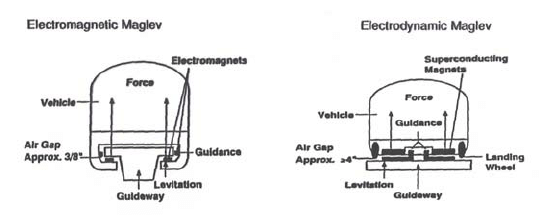
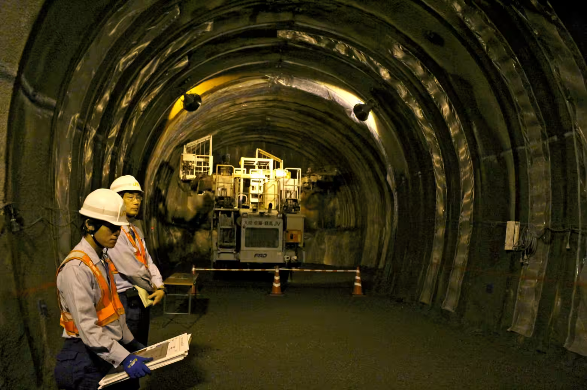

The amazing technology of magnetic levitation (Maglev) trains, has made a breakthrough in transport technology, using magnetic forces to completely remove the contact between trains and tracks. Therefore, making it possible for train to travel over 400 kilometres an hour but also providing a smoother ride for the passengers. The article takes a comprehensive look at the basic principles of Maglev technology, what the current of Maglev applications are, its environmental and economic impact and prospects for future transportation development globally.
Now most traditional railways are transformed by magnetic levitation technology, or Maglev. Under this scheme, more citizens can arrive at their destinations quicker. In its earliest form, Maglev was theoretically advanced around the early 1900s. Ever since, Maglev projects have been the standard for high-speed rail networks in the present and future transportation. Pioneer examples in countries like Japan and China are now underway on a large-scale construction of train lines throughout their country: these multi-billion-pound train lines can reach top speeds of 600 km/h. Watching the high speed at which Maglev travels without friction is especially fascinating, as its ability to eliminate mechanical contact not only enhances speed but also significantly reduces maintenance needs(Powell and Danby, 1979). These systems not only reduce wear and tear on rails (at long last!) but they also offer smoother, quieter rides due to less friction one travels over them which should be considered environmentally conscious if nothing else. Supported by the latest engineering and physics, Maglev is thus an exciting area of interdisciplinary study for engineers and physicists and is a subject particularly well-suited to collaborative international effort, with nations looking far into the future of travel in cities and between towns.
This section introduces the two main types of Maglev technologies: Electromagnetic Suspension (EMS): This is accomplished through powerful electromagnets attached to the train, interacting with metal rails containing opposing magnets. The system lifts the train slightly off the track and provides stability, which allows it to essentially hover above. EMS is one of the technology options used to both avoid wheel-rail contact and for friction-free motion, particularly in urban Maglev projects that require relatively low-to-modest speed. The efficiency of EMS, particularly in dense urban areas, is remarkable, delivering a silent and vibration-free ride(Wang et al., 2022). These systems are used to effectively reduce noise pollution created by urban transit systems. Moreover, EMS systems can also be scalable for frequent operations, offering a sustainable solution to urban transportation demand in the future. Electrodynamic Suspension (EDS): The system runs on superconducting magnets that provide a repulsive force, stabilizing and lifting the train up as it accelerates to high speeds. This is currently deployed in one of Japan's most famous trains, known as the "L0 Series," which achieves such high speeds that it does not shake from instability, thanks to EDS(Li et al., 2023). EDS also has a unique capacity to accommodate high-speed travel—especially over long distances—which underscores the promise it offers for intercity and international transportation solutions. Nevertheless, its dependence on superconducting magnets poses challenges, including the need for cooling systems to maintain the coils in a superconductive state. However, with rapid advancements in materials science, it is conceivable that EDS could become a driving force for sustainable high-speed transportation in the future.

Maglev technology not only promises faster transit times but also brings several environmental and economic benefits: Environmental Benefits Since all maglev trains are powered by electricity, which is a cleaner alternative to steam-driven trains, they represent a promising development path for global transportation in the future. Maglev systems are also more environmentally friendly than nearly all traditional options because of their frictionless design, which generates less waste energy such as heat and noise typically observed in regular rail systems(Wang and Wang, 2010). The development of Maglev technology will undoubtedly influence future advances in identifying sustainable and green solutions for urban and regional transportation, as modern cities increasingly strive for ecologically friendly alternatives(Wang et al., 2022). Economic Considerations Maglev technology's layout necessitates a significant upfront expenditure due to the need for specialized tools and parts, which are expensive initially. However, long-term economic studies suggest that Maglev's far cheaper maintenance costs compared to standard trains may offset these expenditures. Maglev trains require less track maintenance because they run with virtually no friction, significantly reducing wear and tear(Powell and Danby, 1979). Investing in Maglev infrastructure could be especially beneficial in areas with high population density or major metropolitan corridors, such as between Tokyo and Osaka, offering reliable, high-speed transit and potentially lower operational costs over time. Maglev has the potential to become a profitable asset for regions in need of sustainable transit solutions, thanks to its combination of efficiency and low maintenance requirements(Li et al., 2023).
While Maglev technology offers many advantages, certain challenges have slowed its adoption on a wider scale: High Infrastructure Costs The special track required for magnetic levitation railways can be up to three times more expensive than traditional railways, posing a significant financial barrier. Additionally, this infrastructure demands specially designed power grids to ensure efficient and continuous operation, further increasing costs(Wang and Wang, 2010). Technical Barriers Maglev systems rely on complex superconducting magnets and require significant energy input to maintain stability at high speeds. Addressing these technical barriers is crucial to ensure safety, efficiency, and affordability in future Maglev projects(Li et al., 2023)

Researchers, hopeful of improving both speed and energy efficiency in Maglev transportation, expect that progress could soon make this innovative form more workable and less wasteful. They aim to enhance Maglev's speed capabilities and further optimize the energy-to-acceleration ratio by exploring renewable power sources such as solar-generated electricity, which would make the system even cleaner and more sustainable(Wang and Wang, 2010). Such developments align with the goal of achieving environmentally friendly mass transit while positioning Maglev as a reasonable alternative to costly short-haul flights(Li et al., 2023). Proponents argue that these innovations could transform Maglev into an entirely new form of public transport, offering even faster, greener, and more sustainable solutions on a global scale.